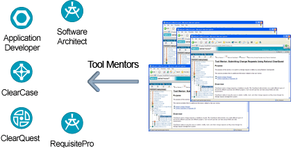

| Tool Specific Guidance |
 |
|
Main Description
 Tool mentors provide a link between the Rational Unified Process and other Rational tools To reduce training and start-up time, the Rational Unified Process (RUP) includes a set of Tool Mentors that provide step-by-step guidance on how to use a particular tool to complete a task. Tool mentors provide the link between the process and the tools used on projects. Adding new tools is as easy as adding new tool mentors, providing freedom of choice while still providing close integration between process and tools. Tool mentors are provided for most Rational tools. |
© Copyright IBM Corp. 1987, 2006. All Rights Reserved. |